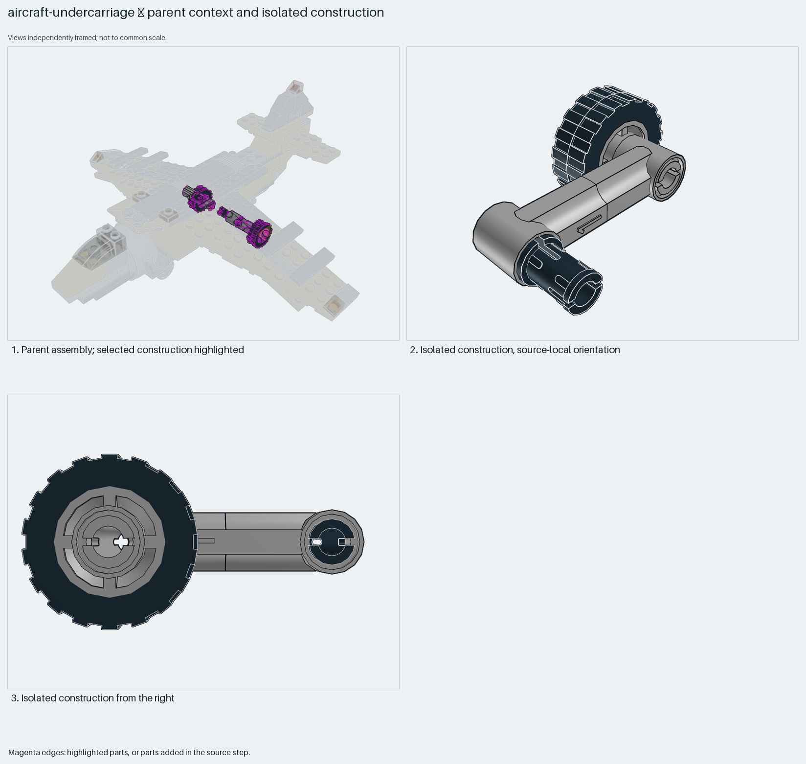
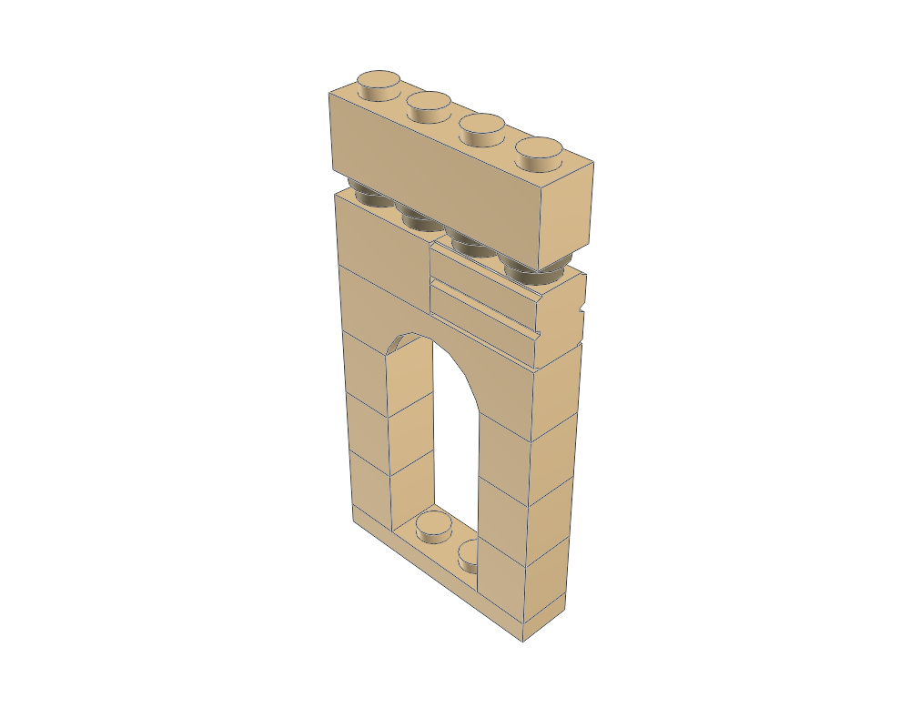
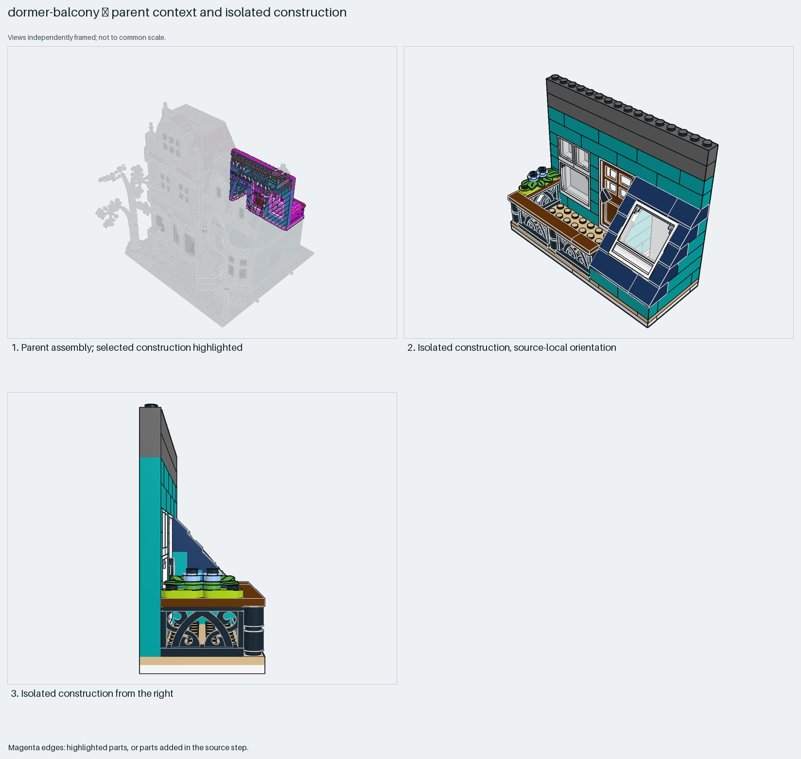
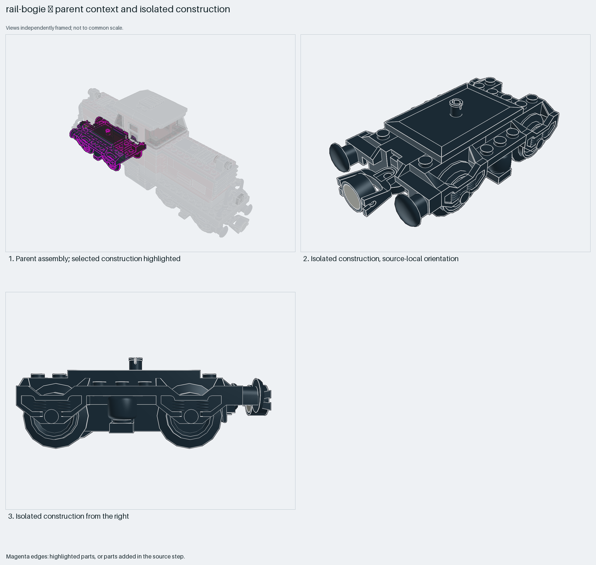
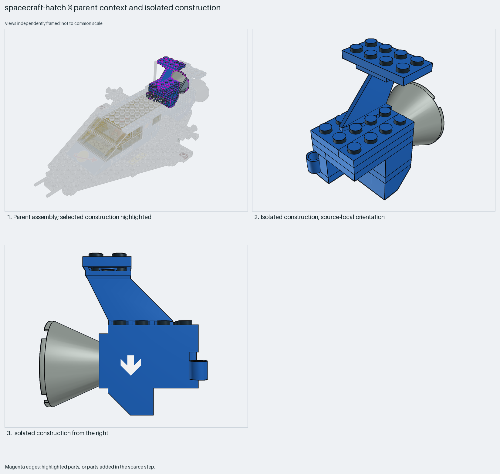
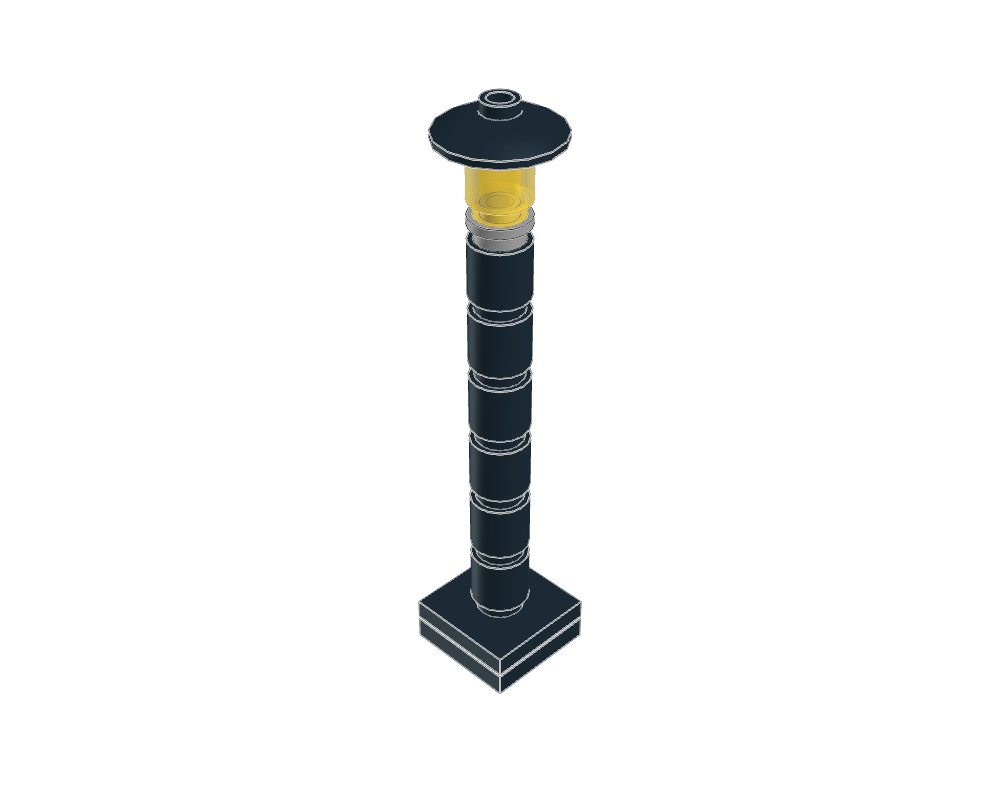
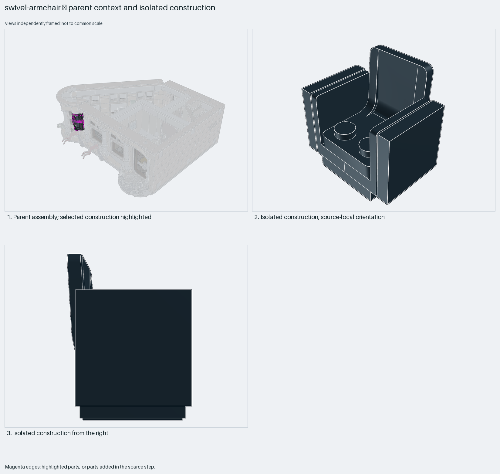
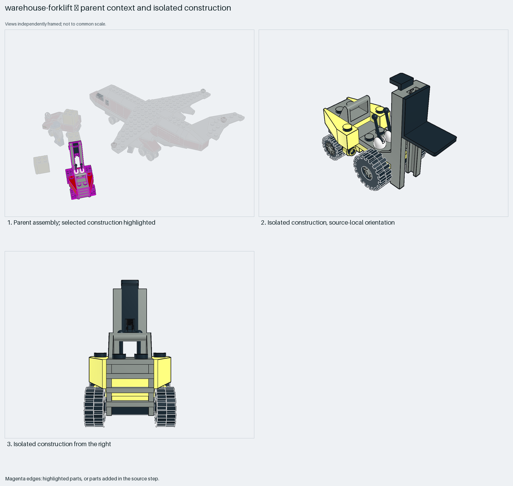

reference construction lessons
Generated from package READMEs. Inspiration, held, diagnostic and retired sources require explicit knowledge search scopes.

Wheel-strut geometry in one source pose; retractable is not demonstrated. Preserve parent mounts; no checked travel claim.
Static visual evidence only unless the linked package records specific further checks. Search eligibility does not certify fit, motion or strength.

Fresh home view shows narrow tan arch, tall piers, round spacers and cornice. Keep adjustable-height recipe beside classical-arch-bay source; articulated means architectural detail, not motion.
Static visual evidence only unless the linked package records specific further checks. Search eligibility does not certify fit, motion or strength.

Sloped blue dormer/window bay, turquoise wall and black ornamental railing with brown top. Correct turquoise-railing description.
Static visual evidence only unless the linked package records specific further checks. Search eligibility does not certify fit, motion or strength.

Two-axle bogie, central pivot, buffers and coupling. Correct single-axle source/card descriptions: two single-axle parts form one bogie.
Static visual evidence only unless the linked package records specific further checks. Search eligibility does not certify fit, motion or strength.

Blue hinged rear hatch with nozzle/fin. Inherited colour differs between preview and parent. One pose does not certify travel.
Static visual evidence only unless the linked package records specific further checks. Search eligibility does not certify fit, motion or strength.

Fresh home view shows narrow round-brick post, open collar, translucent yellow lamp, inverted dish cap and square foot. Keep adjustable-height recipe.
Static visual evidence only unless the linked package records specific further checks. Search eligibility does not certify fit, motion or strength.

Compact black chair and turntable mount. Static-pose scope only; swivel clearance not verified.
Static visual evidence only unless the linked package records specific further checks. Search eligibility does not certify fit, motion or strength.

Complete minifigure forklift: mast, forks, seat, levers, wheels. Isolated inherited colour may differ from source parent. No validated working-lift claim.
Static visual evidence only unless the linked package records specific further checks. Search eligibility does not certify fit, motion or strength.